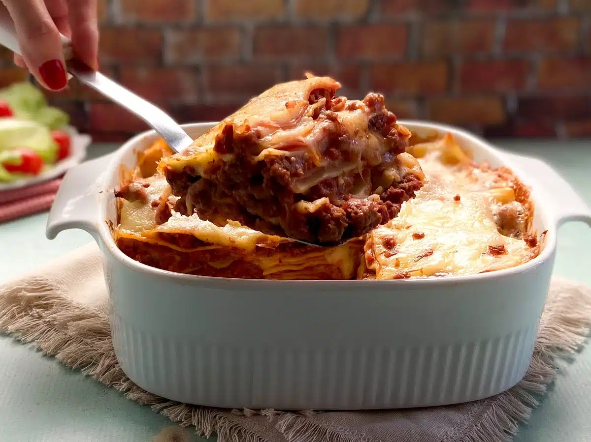

Home
Lasanha

Porções: 6
Tempo de Preparo: 60min
Lasanha caseira é outro nível! Nada se compara com um molho bolonhesa preparado em casa. O passo a passo é fácil, a montagem é rápida e o queijo gratinado derrete na boca. Uma receita que vai entrar para a família. Dá para fazer e congelar.
Ingredientes
- 1 massa de lasanha pronta
- 1 fio de azeite
- 500 gramas de presunto
- 500 gramas de queijo mussarela
- 500 gramas de carne moída
- 340 gramas de molho de tomate
- Sal e pimenta-do-reino a gosto
- Orégano a gosto
Modo de preparo
- Utilizamos patinho, porém você pode usar outra carne moída. Escolha o molho de tomate de sua preferência (caseiro ou de sachê), ou coloque 1/4 de xícara de chá de extrato de tomate para 300 ml de água;
- Em uma panela antiaderente, esquente um fio de azeite em fogo médio. Adicione a carne moída e deixe refogar por 10 minutos, ou até ficar douradinha, mexendo de vez em quando;
- Quando a carne estiver douradinha, adicione o molho de tomate, o sal, o orégano e a pimenta. Se preferir, adicione outros temperos, como manjericão, tomilho e páprica picante;
- Em outra panela, coloque água e cozinhe a massa para lasanha seguindo as instruções da embalagem;
- Para montar, em uma forma ou travessa, coloque uma camada generosa de molho de carne moída. Espalhe uniformemente, cobrindo todo o fundo;
- Depois, faça uma camada com a massa da lasanha. Se preciso, corte a massa para preencher os espaços vazios;
- Em seguida, uma camada de presunto;
- E por fim uma camada de queijo;
- Repita o processo: molho de carne moída, massa, presunto e queijo. Siga o padrão até chegar ao topo da forma e deixe a última camada com queijo para derreter;
- Leve a forma ao forno preaquecido a 180 ºC por 30 minutos, ou até o queijo derreter e ficar douradinho. Retire do forno e sirva. Bom apetite!